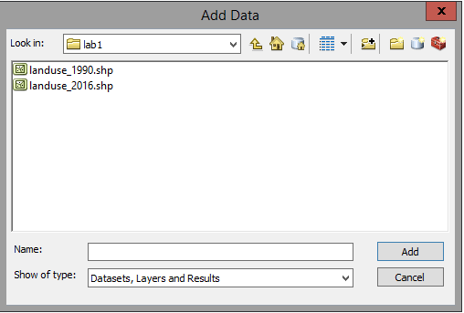
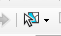

Lab 1 - Introduction to ArcGIS
The first 1/3 of this class will make heavy use of Geographic Information Systems (GIS) as you learn to monitor
land cover change. Additionally, your project for the semester will be to develop a monitoring plan for the San
Dieguito River watershed, and a GIS-based assessment of habitat for your species within the watershed will be an
important component of that plan. To prepare you, we will be starting today to learn how to use GIS.
Geographic Information Systems are computer programs that are designed to work with geospatial data. Geospatial
data is any data that has a distinct location, and includes maps of various kinds as well as images of the surface
of the planet taken from aircraft or satellites. Anything that can be plotted on a map would be considered
geospatial data. We will focus on vector data today, which refers to points, lines, and
polygons. In the next activity we will work with raster data, which refers to data that is
represented with an array of square cells, or pixels.
We will be using the ArcGIS package for all of our GIS work, which is produced by Environmental Systems Research
Institute (ESRI). ArcGIS is by far the dominant GIS software available, and it is the package you are likely to
encounter if you use GIS in your future careers. ArcGIS is very powerful and comprehensive, but this comes at the
cost of being complicated. We will focus on the small subset of the capabilities of ArcGIS that we need to know to
assess land cover change.
We will start with some basic introduction to vector data.
GIS vector data
Any data that we could represent with a point, a line, or a polygon drawn on a map is considered vector data.
|
The three types of vector representations (points, lines, and polygons, shown to the right) are all
constructed from points, which have an x,y position but no length or area. In each case, a single point,
line. or polygon is referred to as a feature.
Points are single x,y coordinates. Points might be used to represent a location at
which you collected a sample, or (as in the picture to the right) the location of manhole covers whose
location is important but the area covered is small.
Lines are a set of points that are connected with straight line segments, like the
roads shown to the right. You can see the roads are defined by points, each of which is called a vertex
(plural vertices). Lines have lengths (which would be defined by the sum of the
distances between the vertices), but do not have an area.
Finally, polygons are defined by a line that encloses an area. The illustration to the
right doesn't show the vertices, but each of the parcels of land are defined by the line that encloses
them. Polygons have a perimeter length (defined by the length of the line that defines the polygon), and
an area.
|

|
The way we represent a feature influences what we can do with the data. For example, you could represent a map of
cities in San Diego County was a set of points at the city center, or as polygons that show the city limits.
Points have a position but do not have an area, so area of land covered by the city would not be represented on
the map. In contrast, polygons cover an area on the map, so the land covered by the city would be apparent, but if
you were interested in calculating distances between the geographic centers of cities you would be better off with
points placed in the centers of the cities. Annotations are data that describes the spatial features on the map.
Thematic layers
Notice that each feature type illustrated above represents a different GIS layer. A single
layer is made up of a single feature type, so you shouldn't see a layer that has both points and lines in it. But
layers of different types can be superimposed on one another for display or for analysis - this is called an overlay,
because in the olden days this was literally done by drawing features on a clear plastic sheet, and then
overlaying them on a map to show how different spatial variables coincided with one another.
To be maximally useful, all of the features in a layer should pertain to the same thing; for example, in the
illustration above the line feature layer has only roads in it, and if you wanted to represent the streams in an
area you would do so in a separate layer, using lines to represent the streams. One of the primary reasons to use
GIS is to overlay different types of spatial data to look for spatial relationships, and this works best when the
layers represent distinct properties of the area. GIS layers are sometimes called thematic layers
to emphasize that each layer is representing a different property. If you wanted to see how roads and streams
coincided, you would overlay a road layer with a streams layer, rather than making a single layer with lines for
both roads and streams.
Feature attributes
|
Vector GIS data can represent multiple different variables that pertain to each feature. Vector GIS
layers have a table that holds all of the variables that were recorded for each feature, with a column for
each variable and a row for each feature. The variables are called attributes by
ArcGIS, and the table that holds them is called an attribute table, like the one to the
right; this is an example of what an attribute table for a point layer (like the manhole covers in the
illustration above).
|
|
Each row in this table is a different manhole cover, and each must be given a unique identifier so that the
attributes can be assigned to the correct manhole cover - this is the FID column, which is short for "field
identifier" (a "field" is a column in a table in computer science lingo). The next field, Shape, gives the data
type. The rest of the fields are attributes of the manhole covers - there are fields that give the position of the
manhole covers in longitude and latitude coordinates (both in decimal degrees), the diameter of the manhole cover,
the material it's made of, and the date that the manhole cover was last serviced. You can store as many attributes
as you want in an attribute table, but each attribute must be a variable that's recorded at the level of each
individual feature.
By the way, you may hear me talk about spatial data and tabular data -
spatial data refers to the part of the data represented with spatial coordinates (that is, the points, lines, and
polygons themselves), and tabular data refers to the data that is held in a table, such as the attribute table.
Consequences of the choice - what feature type should be used?
A map is a representation of reality, and is best thought of as a kind of model. Models are never perfect
reflections of reality - they are meant to represent the important features of the systems we're interested in so
that we can study and understand them better. But, drawing conclusions based on a model is only a good idea if the
model is a good representation of reality in the ways that matter to us. This is true of maps as well.
For example, the feature types we use in a vector GIS are all mathematical abstractions. As you (should) have
learned in your geometry class, a point has no length or area, a line has length but no area, and a polygon has
area but no volume. It seems natural enough to represent something like a manhole cover with a point layer, but
manhole covers are not geometric points because they have a surface area. Similarly, it is natural to represent
linear features like roads and rivers with a line GIS layer, but roads and rivers have widths as well as lengths,
and thus also have surface areas. It would clearly be more accurate to represent all features with polygons, so
why don't we use polygons for everything?
If you look at the attribute table for the manhole covers, you'll see the answer - the only spatial information
that's recorded is the position of the manhole cover, and for a city worker who is responsible for servicing them
or using them to access the sewer system this is all the information that is needed. Note also that since manhole
covers are round we can add a field that gives the diameter of the manhole cover, which would allow us to
calculate area covered if we needed it without having to map the perimeter of each manhole cover. Similarly, we
could add a field to the roads layer that gave the width of the road, and could calculate the area covered without
having to use polygons to represent the roads.
On the other hand, if we are going to create a layer with all of the cities in San Diego County, the choice of
point or polygon feature types is less obvious. Using points to represent cities would be fine for mapping the
positions of the city centers on a map, but cities cover a large enough area at the County scale that we would
probably want to see the city limits as well. We would probably like the ability to overlay a polygon of the city
with a layer of roads so we could see how many miles of road fall within the city limits - we couldn't do this if
our cities were represented with points.
In summary, then, points are used when only the position of a feature is important, lines are used for linear
features in which the length of a feature is important but the surface area is not, and polygons are used when the
boundaries of the feature are important.
GIS data files
Shapefiles
You're probably used to working with programs that store everything that's needed for a particular document
you're creating in a single file. For example, if you were writing a report for a class in MS Word, everything
that Word needs for your report is in a single file, including the text itself, the instructions for formatting,
any pictures or graphs you included, and so on. When you turn your report in to your professor, you just have a
single Word document you need to submit. Most of the programs you've used, including all of the MS Office
programs, and audio, video, and image editing programs, all use file formats that work this way.
When you save your report as a Word file, you might give the file the name "my_report", and
Word automatically appends a filename extension that designates the type of file it is (probably
either .doc or .docx depending on the version of Word you're using). The same is true for a data file you're
working on in MS Excel - you might save it with the filename "my_data", and Excel would append an extension (.xls
or .xlsx) that designates the file as an Excel spreadsheet. Microsoft hides filename extensions by default, so if
you open the File Explorer you will see files that have little icons to show you the type of file, and if you are
using a list view it will give you a "Type" column telling you the file type; the icons and the Type column come
from the filename extension on the file, but the extension isn't displayed. If you are a Mac person this may seem
unfamiliar - the Mac OS doesn't require filename extensions, and determines the file type by examining the first
few lines of the file (even if a filename extension is present it's ignored).
ArcGIS makes use of filename extensions like other Windows programs. What is different about ArcGIS is that many
common GIS data file formats are made up of several different files, each of which shares the same filename, but
each with a different extension. The most common GIS vector data file format is the shapefile,
and it works this way. For example, here is a screen shot of two of the shapefiles you will be working with
shortly, as they appear in the file explorer in Windows:
You'll see that thee are eight files in the folder, but that four have the same filename
("landuse_1990" or "landuse_2016") and differ on in their filename extensions. Filename
extensions have never been used by Macs, but they have long been used as a way of identifying the file format in
Windows (even if you are a Windows user you may not be familiar with them because more recent versions of Windows
hide them by default, and instead give the program the file format is associated with under the "Type" column
instead). ArcMap will act as though a shapefile is just one file, but in fact all of these need to be present in
the same folder for ArcMap to work correctly. Both shapefiles are polygon layers that show the type of land uses
within the San Dieguito River watershed.
Each of the files that make up a shapefile holds information about the layer that ArcMap needs - the files for
landuse_1990 are:
- landuse_1990.dbf - this is the attribute table. Files with a dbf extension are actually
Dbase files, which is a database file format used for tabular data. If the dbf file is missing, there will be no
attribute table for the layer.
- landuse_1990.prj - this is the projection file. Projections are methods used to flatten the
round surface of the earth onto a two-dimensional display, like a paper map or a computer screen. The prj file
also tells ArcMap what the spatial coordinate system of the shape file is, which is the x,y coordinate system
used to designate location (latitude and longitude, a.k.a. geographic coordinate system, is common but there are
others). The prj file isn't needed to display the file, but without it ArcGIS won't know where in the world the
map is, and two maps in different projections won't overlay properly. A shapefile should always have a prj file.
- landuse_1990.shp - this is the file that has the actual spatial data. The shp file stores the coordinates of
all the vertices that make up the points, lines, or polygons. Sometimes the shp file alone is referred to as the
"shapefile", but really the shapefile is the entire collection of files that define the layer.
- landuse_1990.shx - this is a spatial index file, which is used by ArcGIS to locate features more quickly. This
is a required file, but if it's missing ArcGIS can re-create it from the other components.
The landuse_2016 shapefile also has a dbf, prj, shp, and shx file.
It's important that you understand how shapefiles work, because if you want to move the landuse_1990 shape file
to another location, or send a copy to somebody else to work on, you would need to copy all four of the
files with the landuse_1990 file name. If you just send the landuse_1990.shp file, there will be no attributes,
and no way to know where the map is supposed to be on the surface of the earth.
We would generally not need to interact with these files individually. Both the shp and shx files are binary
files that can only be opened by a GIS program that understands the shapefile format. The prj file is just a text
file, which you can open with Notepad, or any program that can read text; you might want to do that to see what
the projection on a shapefile is without having to start up ArcGIS, but it's not a good idea to change a prj file
by hand - best to use ArcMap to do it. The only file that you might want to work with outside of ArcMap is the
attribute table (landuse_1990.dbf) - Dbase files can be opened in Excel and modified, which we will do in another
lab.
Geodatabases
Shapefiles have been around for a long time, and are still in common use, but they have some annoying
limitations. The Dbase format has strict limits on the lengths of column names, for example, that can prevent you
from using good descriptive names for the variables in your attribute table. The newer format that ArcMap works
with is a geodatabase.
"Database" is a fairly loosely defined term, which refers to any collection of data about a single topic. Adding
"geo" as a prefix just means a database that has spatial data in it (as well as tabular data).
There are actually two different types of geodatabase supported in ArcGIS, but we will use the personal
geodatabase, which is designed to be used by single users at a time. One advantage of the personal
geodatabase is that all of the data you put into it resides in a single file, in the Microsoft Access database
format. This means that any layers we create or import into our personal geodatabases will be added to the single
file. Geodatabases have fewer annoying limitations than shapefiles, and are a good choice for most work. Even
though geodatabases contain all of the files needed for a project, including multiple different thematic layers,
it is possible to export a layer out of a geodatabase into a shapefile (or into another personal geodatabase) so
that you can share a single layer with somebody else. You will each create a personal geodatabase to use for this
class shortly.
Organization of ArcGIS - ArcMap and ArcCatalog
We're about to get started working with some data, but first a word about how ArcGIS is organized. ArcGIS is
actually a collection of programs that each do different GIS tasks. The two ArcGIS programs we will use are ArcMap
and ArcCatalog. We will use ArcMap the most, as it is used for most of the analysis tasks we will perform, as well
as for constructing maps for display.
Today, though, we will start with ArcCatalog, which is used for creating and managing GIS data files of various
kinds.
Creating your personal geodatabase in ArcCatalog
Finally, time to get to work.
1. Start ArcCatalog
If you are working on campus at a student
computer, you can start ArcCatalog by clicking on the Windows start menu, and typing "ArcCatalog". Even if you
run ArcCatalog this way you will be running it through Citrix, but it is set up in a way that makes it appear
that you're running it locally on the computer you're using.
Since we may all be sitting in different locations
while doing this work, I'll assume you need to run ArcGIS through CougarApps - go to
https://cougarapps.csusm.edu, log in, locate the ArcCatalog launcher icon inside of the ArcGIS folder, and click
it. Hopefully you have done this before, and the needed Citrix Receiver software is already installed on your
computer.
If you have not installed Citrix, or if you have
been using the "light" version that runs inside of your web browser rather than running separately on your
desktop, please refer to the instructions for running CougarApps on your computer here:
https://www.csusm.edu/iits/iitsforyou/cougarapps/index.html
Once it launches, you'll see a window that looks like this:
From here we will set up the folder connections you will use.
2. Make the folder connections you need
For reasons that are not obvious to me, ArcGIS programs are not able to use the operating system on the computer
to locate files, even though this information is available to every other program you use. Because of this, you
need to establish a "Folder Connection" to any file system you want to use. We will establish the needed folder
connections now.
First we need to set up a folder connection to the location you will keep the files you're working on. Since we
may all be working at a different location (off campus or not) we will want to keep files in a location that can
be accessed from any computer you're working on. GIS files can be big, so you have been given a network drive on
CSUSM's servers that has 1 GB of space for this class. It is on the S: drive, so our first folder connection will
be to S:.
Find the "Connect to folder" icon, circled in red here (if you hover your mouse over the icon a tool tip will pop
up telling you this is the Connect to Folder tool). Click on it.
We will be given a network drive to use for class that gives you enough room for the rather large files that GIS
produces. It has drive letter S:, so we will need to select it now in the Connect to Folder window. The first
folder connection we need to make is with the "public" network drive where I've deposited all the files you'll use
for class assignments. To find it click on the triangle next to "This PC", and then scroll down until you find an
entry called "Public on Viking (P:)". The name of this network drive is Public, it's running on a CSUSM server
called Viking, and It has a drive letter of P:. It looks like this:
If you select the "Public on Viking (P:)" entry it will open up and show its contents - my materials are
sub-directories under P:, so let's connect to those directly - when "Public on Viking (P:)" opens navigate through
to "Biology" → "kristanw" → "biol420620" - this folder will now appear in the "Folder" box, and you can click "OK"
to complete the folder connection.
You should now be returned to ArcCatalog, and the new folder connection is selected and showing its contents,
like so:
You'll see that files needed for labs 1 through 9 are in this folder, plus a folder of basemaps we will use as
backgrounds.
You will also be provided a drive on CSUSM's servers
for your work in this class - GIS makes big files, and the small amount of space you're given for your H: drive
is not sufficient. You will also be given space on an S: drive, which will be your working directory where
you'll store all of the files you make in the course of completing labs for this class. You will not need to
copy any of the files from P: into S: - ArcMap will always make output files that are separate from the inputs
we use, and it is only the inputs that are stored on P:.
To make the folder connection to your S: drive click on the "Connect to folder" button again, open "This PC" and
look for the entry with your username followed by something like (\\csusmnt\SOMETHING) (S:) - click on this entry,
but do not yet click "OK". Confirm that the "Folder" box shows "S:", and then click "Make New Folder", which will
put a folder into the S: drive - rename it EcolMon, and select it. Click "OK" to connect to this subfolder.
We have had issues in the past with ArcMap crashing if you use the root folder on the S: drive, and doing your
work in a subfolder prevents this bug from biting you.
Now that you have both of your folder connections set up, you're ready to make the geodatabase you will use for
this lab.
3. Create a new personal geodatabase in your S: drive.
The steps are:
- Select your S: drive folder connection.
- Position your mouse in the blank, white area of the Contents window on the right that lists the contents of
S:, and right-click.
- Select "New" → "Personal Geodatabase". The file will be created in S: with the name "New Personal
Geodatabase".
- Rename the file "monitoring". When you first create the file it's set to accept a new name, but you can
right-click and select "Rename" if you missed the window of opportunity.
You will use this database for all of the GIS work we do in class.
You are now ready to start ArcMap and begin to work with some data.
Working with data - ArcMap
1. Start ArcMap
You can start ArcMap the same way you started ArcCatalog, or if ArcCatalog is still open you can launch it from
there - click on on the world with a magnifying glass icon, like this:
...and ArcMap will start.
When ArcMap starts, it will open a "Getting Started" window that asks you how you what paper size to use for the
map you create, and which geodatabase file to use. It will look like this:
You can select Letter (ANSI A) Landscape as the map template. Also, it is VERY IMPORTANT to change the default
geodatabase at the bottom of this window from Default.gdb on the C: drive to monitoring.mdb on S: - see how this
is set in the screenshot. You can click on the open folder button to the right of the "Default geodatabase for
this map" box and go find your geodatabase so that you can click on it - this will prevent typos.
When you Click OK you will see something that looks like this:

ArcMap is used both for analyzing data and for making maps, and it has a different view mode for each, called
"data" and "layout" respectively. It starts in layout mode, which means that you will see the outline of the paper
(the outer rectangle), and the outline of the printing area for the map (the inner rectangle). If you move your
mouse over this display, you'll see that there are two different coordinates displayed in the status bar at the
bottom of the ArcMap window. The first is labeled "Unknown Units", and it pertains to the coordinates of the
mouse's position on the ground. Since we don't have a map displayed, ArcMap can't tell us the geographic
coordinates of the mouse yet, so it give a relative position within the window with "Unknown Units". The second
set of coordinates are the position on the paper, in inches away from the lower left corner. If you position your
mouse at the lower left corner of the paper, you'll see the paper units go to 0,0 and the geographic units stop
being displayed once you leave the map and enter the border around the map.
We're going to ignore map making for now and focus on data display and analysis, so we're going to switch views.
Click on the icon in the lower left corner of the map display:
to remove the layout view. You will see you only have one set of coordinates now, which are still in unknown
units.
Next we will add some map data.
2. Add data to the map.
|
To add data to the map, click on the "Add Data" icon in the toolbar just below the "Selection" menu
(circled in red here - hover over it and the "Add Data" label will appear).
|
|
|
In the window that opens, you will probably see the monitoring geodatabase - we need to go to the project
files on P:, so drop down the "Look in" menu, and select your P: drive folder connection.
Continue into lab1, and you will see files called landuse_1990.shp, and landuse_2016.shp. Remember, there
are actually four files making up each of these layers, but ArcMap is only showing you the file with the
.shp extension to keep the display less cluttered.
|

|
Select the two shapefiles by clicking on the first, holding down the SHIFT key, and clicking on the second one
(or, by dragging a box around them) - click "Add" to add them to ArcMap.
You'll see a map of the San Dieguito River watershed, with polygons that represent different land uses within the
area.
There are two layers in your map, but since both contain polygons shaded in with a solid color you can only see
the one on top. Both of the layers are listed in the Table of Contents to the left of the map window. Initially
these are displayed in the "List by visibility" view - click on the "List by drawing order" button, like so:
... and you will switch to a listing like this:
... with a black check mark in a box next to the layer's name. The top-most layer is the one that's drawn last,
and is thus on top. If you un-check the top-most layer, you will see the one below it, and if you check the box it
displays again.
You can drag the layers into different orders to change which is on top - click, hold, and drag the last layer
listed (landuse_1990 in my case) into first place and drop it there - you should now the layer you just dragged
into first place displayed.
Drag landuse_1990 into the first place so that it's displayed before moving on, if it isn't there already.
3. Set the displayed coordinate units to decimal degrees.
As you move the mouse around over the map, you'll see the geographic coordinates are now shown as feet. These
maps were obtained from the San Diego Association of Governments (SANDAG), and are distributed to the public in
the Lambert Conformal Conic projection. Projections like the Lambert are good at mapping smaller areas without
serious distortion in shape, size, or direction, and they use their own coordinate system. Lambert's system
establishes reference longitude and latitude lines as the coordinate axes, and then defines positions in feet east
and north of these lines.
Projected units are usually useless for things like getting a coordinate to feed into your GPS, but we can change
the units used to display your mouse position to latitude and longitude, a.k.a. geographic coordinates. The steps
are:
- Select "Layers" in the "Table of Contents" on the left side of the program, and right-click (if you're on a
Mac, hold down CTRL and then click on Layers). Select "Properties" at the bottom of the menu that pops up.
- Switch to the "General" tab.
- Under "Units", drop down "Display" and select "Decimal Degrees".
Once the screen re-draws, you'll see that the units are now showing longitude (starting with -117 or -116) and
latitude (starting with 32 or 33). You may have learned that geographic coordinates are measured as degrees,
minutes, and seconds - decimal degrees are just degrees + minutes/60 + seconds/3600, which converts the minutes
and seconds to decimal numbers. Geographic coordinates are useful for navigation, but are less useful for things
like calculating distances between points because longitude lines converge as you approach the north and south
poles, and the amount of distance between longitude lines changes depending on your latitude (i.e. distance from
the equator).
4. Panning and zooming.
At our current zoom level we can't really see the smaller polygons, so it would be nice to zoom in on them.
To do this, click on the "Zoom in" tool (which is the magnifying glass with the + in the glass ),and drag a box around the area you want to zoom to.
Once you've zoomed in, you won't be able to see the whole watershed anymore. You can move the area you are
viewing without changing the zoom level using the pan tool (which was selected by default
when you started - it's the hand, ). Click on it to activate the tool,
click and hold on the map and drag it to a new location and let go. You'll see you changed the location you are
viewing without changing the zoom level.
To zoom out you can use the zoom out tool, which is the magnifying glass with the minus sign in the glass (like
this ). Select the tool and zoom out by clicking on the image.
You will at some point zoom and pan your way off the map, or to such a high level of zoom that you can't tell
where you are, or in some way get yourself lost. To zoom back out to the original position, right-click on one of
the layers, like landuse_1990, and select "zoom to layer". This will center landuse_1990 in the window, and zoom
out so that you can see the entire layer.
The other way to go back to the beginning is to click on the "Zoom to full extent" button (the world icon, next
to the pan tool, ). This button works like the zoom to layer option,
but it zooms to the extent of all of the layers in your table of contents - not an issue here, because both layers
cover the same area, but sometimes different layers cover different parts of the map and this button will zoom out
so that you can see them all.
5. Open and look at the attribute table for landuse_1990.
Select landuse_1990 in the Table of Contents, right-click and select "Open attribute table". You will see a table
open up with the first column FID (feature ID, a unique number assigned to each point), Shape (which is Polygon,
this is a polygon layer), and LANDUSE. The FID and Shape columns are used by ArcMap, but the landuse column gives
the type of land use for each of the polygons.
Leave the attribute table for landuse_1990 open, but now right-click landuse_2016 and open its attribute table as
well. You'll see that it opens in the same Table window, in a separate tab from landuse_1990. Both attribute
tables are structured the same way, so there is a LANDUSE column in both of them.
Once you've gotten a look at the way the attribute tables are structured, you can close the Table window.
6. The link between features and attributes
The individual polygon features are linked to a row in the attribute table, and we can use one to find get
information about the other. Let's start by finding out the attributes of polygons we pick from the map. There are
two ways to do this, with the identify tool, and by selecting a polygon and
then looking at the selected row in the attribute table.
We'll start with the identify tool:
- Zoom in to a portion of the map so that you can see the individual polygons - down at the coast, which is the
lower left edge of the watershed (the San Dieguito River enters the ocean at the border of Del Mar and Solana
Beach, and there is a little strip of beach that makes a relatively flat stretch at this lower left edge).
- Click on the identify tool to activate it - it's the blue circle with a white "i" inside of it, like this .
- With the identify tool active, click on any polygon. You'll see that the polygon will flash a color and then
the attributes for that polygon will be displayed for the top-most layer.
When the Identity window pops up you'll see something like this (the attributes may be different if you clicked
in a different polygon):
You'll see that since I clicked in a single polygon I got just one identified, and its LANDUSE is FIELD CROPS.
You'll see that the "Identified from:" box at the top is set to show only the top-most layer, but we can change
that. Drop it down and change it to <Visible layers> and click on the same polygon you did oritinally.
You'll see the Identify window now shows what is in the polygon for both of the layers at the point you clicked.
Close the identify tool window, and we will try out the select tool next.
- Click on the select tool, which looks like this , to activate it.
- If you now click on a polygon with the select tool you will see that the polygon's boundary line is
highlighted.
- Right-click on the top-most layer (should be landuse_1990) and open the attribute table.
- At the bottom of the Table window, you will see two icons that look like this: .
The icon selected shows all of the rows in the attribute table, but if you click on the one on the right only
the selected row will be displayed, and you can see what the polygon is based on its LANDUSE.
Selecting is also a way of restricting which features are used in a GIS operation, so you should un-select
features when you're done doing whatever you selected them to do. To clear the selected features click on the
"Clear selected features" button right next to the "Select" button, or by dropping down the "Selection" menu and
choosing "Clear selected features", like so:
7. Selecting by attribute
If rather than clicking on polygons to see what's in them, we instead wanted to select all of the polygons in the
map of a certain land use, we could do a "select by attribute" operation. This can by done from the Selection menu
- drop down "Selection", and choose "Select By Attributes...". You will get a Select By Attribute window
that looks like this:

The layer you are selecting from (landuse_1990) is listed, and the columns from its attribute table (called
"fields" in database terminology) are shown in the field list. This tool is used to build a query,
which is database terminology for a command that will search the database for the records that match your request
and return them to you. The query that is being built is shown below the matrix of buttons we can use to identify
what we want to find. The box below the query is going to display the "where" statement we construct - the
structure of the query is
- SELECT * = select all of the columns of the table
- FROM landuse_1990 = the database to select from
- WHERE ... = a statement that identifies which rows we want to select
We use the Select By Attribute window to build the WHERE statement. To build the WHERE statement, do the
following:
- Double-click on "LANDUSE" in the field list, and you'll see it appears in the blank white box below the query
being constructed.
- Click on the = button, and it should appear to the right of "LANDUSE" in your WHERE statement box.
- Click on the "Get Unique Value" button, and you will see a list of all the different cover types present in
the layer appear in the blank field in the middle of the window.
- Scroll through the unique values until you find 'Landscape Open Space' - double click on this and it should
appear to the right of the = sign in your WHERE statement.
- If all went well, your WHERE statement now reads: "LANDUSE" = 'Landscape Open Space'
- Click on "Apply" to run the query. You should now have 141 selected polygons (this count is displayed in the
lower left corner of the ArcMap window).
We can also launch the select by attribute window from within the attribute table. Close the Select By Attribute
window, right-click on landuse_1990 and open its attribute table. You should see the left-most icon in the toolbar
at the top of the Table window is , , which you can click on
and select "Select by Attribute" from the drop-down menu. If your table is still set to only display selected
features you'll see all 141 of the open space polygons displayed.
You can close the table window, and zoom to the extent of landuse_1990 - you'll see where the open space polygons
are found within the watershed.
8. Make a layer, and add it to your database.
While the open spaces are still selected, right-click on landuse_1990 and select "Selection" → "Create layer from
selected features". You'll see you now have a third entry in you Table of Contents, with the new one called
"landuse_1990 selection". If you turn off the two shapefiles (by un-checking their boxes) you'll see that you now
have a layer with only the features you selected from landuse_1990.
This is not actually a new shapefile, it's just a way of pulling out the selected polygons for use as though they
are a separate file. To permanently extract these polygons, we need to export them from landuse_1990 selection -
we will put them into your geodatabase.
- Right-click on "landuse_1990 selection", and select "Data" → "Export data..."
- In the "Export Data" window that pops up, you need to tell ArcMap to export into your geodatabase, so click on
the folder icon next to "Output feature class:".
- In the "Saving Data" window that pops up, confirm that "Save as type:" is set to "File and Personal
Geodatabase feature classes" - if not, select it.
- Navigate to your monitoring.mdb file on your S: drive. Double-click on monitoring.mdb so that it appears in
the "Look in:" menu at the top of the window.
- Change the "Name:" of the layer that will be saved into monitoring.mdb to "landscape_open_space_1990", and
click "Save".
- Back at the Export Data window you should now see that your new landscape_open_space_1990 layer is being
output to monitoring.mdb. Click "OK" to complete the export.
- When you're asked if you want to add the exported data to the map as a layer, click yes.
You have now added the landscape open spaces from landuse_1990 to your geodatabase.
That's it for today - before you move on to saving your work, right-click on landuse_1990 and select "Selection"
→ "Clear selected features"...this will save us from making mistakes when we come back to use these layers in a
later lab.
Save a map, backing up your work
The geodatabase is already saved - you exported data to it on S:, so no saving is necessary for the data.
However, you should still save the map, so that you can come back to the project again with everything in the same
state as you're leaving it now. To do this you need to save a map file.
To save the map file, select "File" → "Save", call the file "lab1", and save it to your S: drive folder
connection. You should now have now a file called "lab1.mxd" on your S: drive, which is the map file.
To be clear - a map file does not contain the data for the project, it only contains the map layout. As long as
you also work on your monitoring.mdb geodatabase on your S: drive it is also saved. Just as we learned earlier
that sending landuse_1990.shp to a collaborator doesn't include everything they need, sending just an mxd file is
useless without the data.
As long as you use S: for all your work, you should be able to access these files either from campus or from
home, and you shouldn't have to worry about losing work.
That's it for today!